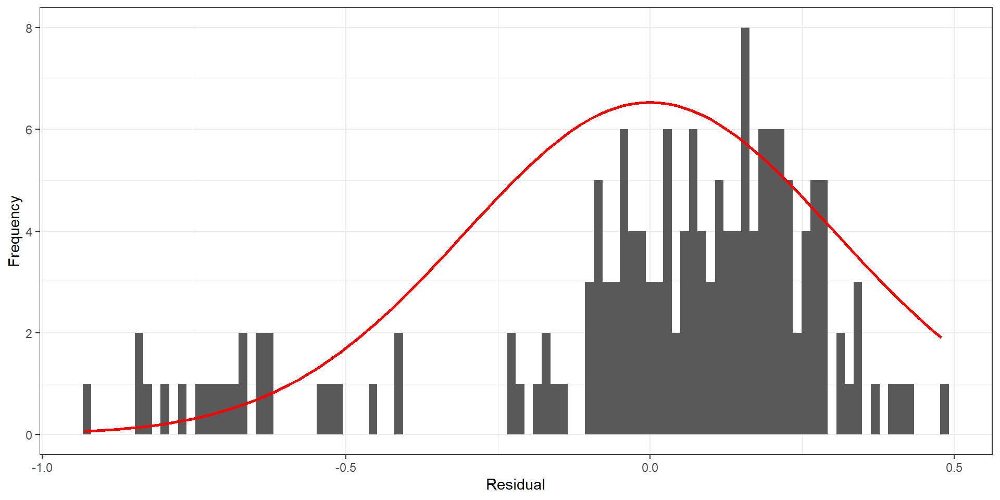
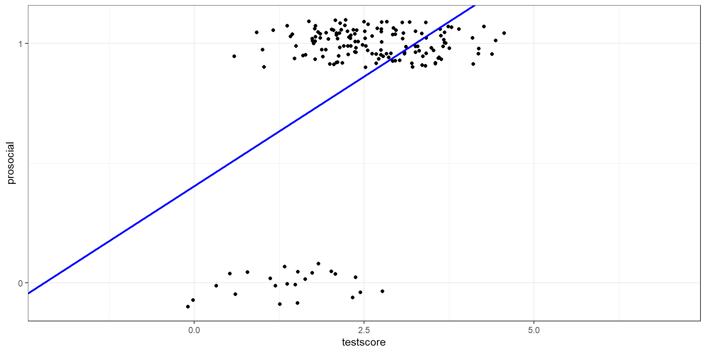
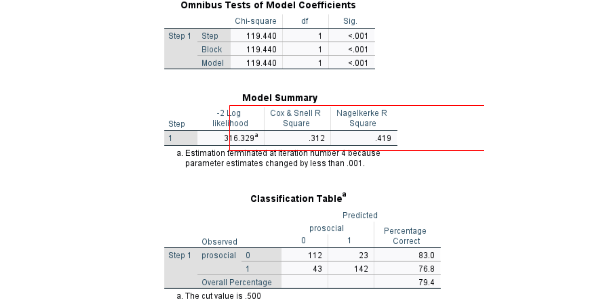
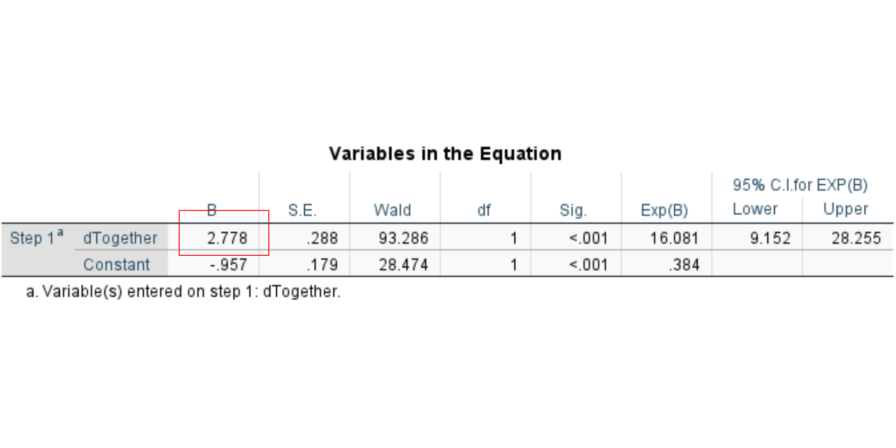
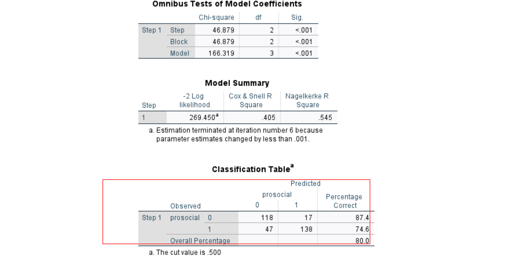
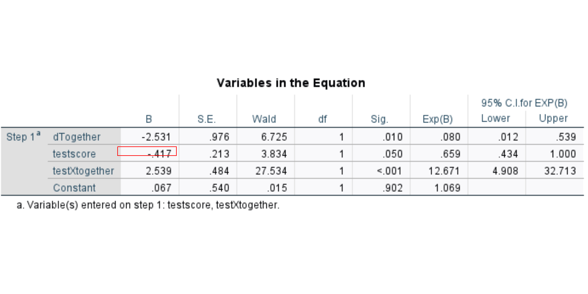
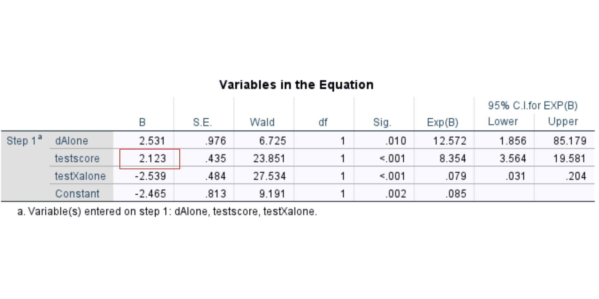

| B | SE | Z | p | |
|---|---|---|---|---|
| (Intercept) | -2.46 | 0.81 | -3.03 | 0 |
| testscore | 2.12 | 0.43 | 4.88 | 0 |
GLM VIII Logistic Regression
Caspar J. van Lissa
2023-11-12
Introduction
The road so far
- \(Y_i = a + bX\): Bivariate linear regression
- \(Y_i = a + bX\) where \(X\) is a dummy variable: comparing two groups, aka independent samples t-test
- \(Y_i = a + b_1X_1 + \ldots + b_kX_k\) where \(X_{1 \ldots k}\) are dummy variables: comparing multiple groups, aka ANOVA
- \(Y_i = a + b_1X_1 + \ldots + b_kX_k\) where \(X_{1 \ldots k}\) are continuous or dummy variables: multiple regression
- \(Y = a + b_1X_1+ b_2X_2+ b_3(X_1*X_2)\): Interaction effect
Introducing: Logistic Regression
Logistic Regression: Regression analysis with a binary dependent variable.
To represent this, we predict a transformation of dependent variable Y instead of just the raw scores:
\(f(Y)\) \(= a + b_1X_1+ \ldots b_kX_k + \epsilon\)
Where \(f(Y) = log(\frac{P(Y = 1|X)}{1-P(Y = 1|X)})\)
Why use logistic regression?
In any case where the outcome variable is binary categorical (nominal or ordinal)
We can code such outcomes as dummy variables:
- Whether a customer bought (1) vs did not buy (0) a product
- Whether a person helped (1) or did not help (0) somebody in need
- Whether a patient has a neurological disease (1) or not (0)
Example Data: Chimpanzees
Inspired by Richard McElreath: Study of prosocial behavior in Chimps
- The chimp pulls one of two levers:
- Both levers deliver a tasty treat to the chimp
- One lever additionally delivers a treat to the second chimp
- Dependent variable: whether chimps pulled the lever with two treats (1) or not (0)
- Two conditions:
- The chimp is “alone”
- The chimp is “together” with a second chimp
- One covariate:
- Chimp’s average test score in other experiments
If chimps are prosocial, we should see an increase in pulling the lever with treats for both chimps, but only when a second chimp is present
Can we use Linear Regression?
For the moment, consider only the “together” condition
- Does testscore predict prosocial choices?
- Maybe we can interpret the regression line as predicted probability \(P(Y = 1)\)?
- Predicted probabilities outside of range [0, 1]
Violation of assumptions
Heteroscedastic residuals

Violation of assumptions
Non-normal residuals
Residuals not normally distributed because Y only has two values
What’s wrong with Linear Regression
Problem:
- Predicts impossible probabilities outside the range [0, 1]
- Heteroscedastic residuals
- Non-normal residuals
Ideal solution:
- Transform the predicted outcomes using a function that limits them to [0,1]
- Assume a different distribution for the prediction errors
Introducing the logit
Logit: The log of the odds of the outcome being present versus absent.
\[ Logit(p) = \log{(\frac{p}{1-p})} \]
Logit Function
Predict the logit of the probability instead of just the probability of \(Y\)

Different Error Family
We’ve previously assumed that the prediction errors are normally distributed:
\[ \begin{align} Y_i &= a + bX_i + \epsilon_i \text{, where}\\ \epsilon_i &\sim N(0, \sigma_\epsilon) \end{align} \] Logistic regression instead assumes a Bernoulli error distribution
- Used to represent binary outcomes, like coinflips
- Outcomes are either 0 or 1
- The Bernoulli distribution has one parameter: The probability of observing a 1
Logistic Regression Model
The outcome is Bernoulli distributed; each participant has an individual probability of “success” \(p_i\):
\[ Y_i \sim \text{Bernoulli}(p_i) \]
The logit of this success probability is a linear function of the predictors:
\[ \text{Logit}(p_i) = a + b*X_i \]
Do you spot our familiar linear model \(a + b*X_i\)?
Comparing Linear and Logistic Model



Probability, odds, logit
Probability
Recall that, for any “random experiment”, probability is defined as the long-run proportion of observing an outcome
- If we flipped a coin 100.000 times, we would expect to see heads (1) 50.000 times
- So the probability \(P(heads) = 100.000/50.000 = .5\)
For our chimpansees, the overall probability of acting prosocially is \(P(prosocial) = 0.86\)
Odds
Odds: Probability of an event occurring divided by the probability of the event not occurring.
\[ Odds = \frac{P(success)}{P(faillure)} = \frac{P(success)}{1-P(success)} \]
- So given probability \(P(prosocial) = 0.86\), the odds are \(\frac{0.86}{1-0.86} = 6.17\)
- Odds tell us if it’s more likely to observe the outcome than not
- E.g., at a Casino, if there is a game where I am twice as likely to win as lose (e.g., \(Odds = \frac{.66}{.33} = 2\)), I should play that game!
- More realistically, I might be twice as likely to lose as win: \(Odds = \frac{.33}{.66} = 0.5\))
Logit
The logit converts these odds to a linear function, allowing us to use the linear regression model:
\[ \text{Logit} = \log(Odds) = \log(\frac{p}{1-p}) \]
Prob -> Odds -> Logit and back
You don’t need to know these by heart. You should be able to work with them:
| Operation | Formula |
|---|---|
| Probability to odds | \(\text{odds}= \frac{P}{1-P}\) |
| Odds to probability | \(P = \frac{\text{odds}}{1+\text{odds}}\) |
| Odds to logit | \(\text{logit} = \ln(odds)\) |
| Logit to odds | \(\text{odds} = e^{\text{logit}}\) |
| Probability to logit | \(\text{logit} = \ln(\frac{p}{1-p})\) |
| Logit to probability | \(p = \frac{e^{logit}}{1+e^{logit}}\) |
Model Estimation
Maximum Likelihood Estimation (MLE)
- We obtain the parameters for linear regression using “ordinary least squares” (OLS) estimation
- ‘Simple’ matrix algebra
- Only one possible solution
- For logistic regression, there is no OLS solution
- Instead, we use “maximum likelihood” estimation
Basics of Maximum Likelihood
When estimating model parameters \(a\) and \(b\) for model \(logit(\hat{p}_i) = a + bX_i\)
- Start with random values for \(a\) and \(b\)
- Calculate model-implied probabilities \(p_i\) using \(\text{logit}(p_i) = a + bX_i\)
- For each individual \(i\), calculate the likelihood of observing their outcome \(Y_i\) in a Bernoulli distribution with probability \(p_i\)
- Multiply these probabilities across all individuals to get the likelihood \(L\)
- High values of \(L\): The observed outcome values are very likely, given parameters \(a\) and \(b\)
- Change the values of \(a\) and \(b\) a little bit
- Check if the likelihood has become larger
- Keep repeating steps 2-6 until you find the highest possible value of the likelihood
Coefficients
Coefficients Demo
Interpreting Coefficients
- The intercept \(a\) determines where the function intersects \(P = .5\)
- You can calculate the X-value of the inflection point:
- \(X_{p = .5} = \frac{-a}{b}\)
- The slope \(b\) determines how steeply the function switches from predicting 0 to predicting 1
- Larger values: steeper transition
- If the slope is positive, the function ascends
- Starts at 0, goes to 1
- S shape
- If the slope is negative, the function descends
- Starts at 1, goes to 0
- Z shape
Example Coefficients
For our chimp model (only in the “Together” condition):
- Testscore ranges from 0 to 5
\(\text{logit}(\hat{P}(Prosocial)_i) = a + b*testscore_i\)
Interpreting Intercept
Log odds (of scoring 1 on Y) for someone who scores 0 on all predictors
- We can convert this to the probability of scoring 1 on Y for someone who scores 0 on all predictors:
- \(\frac{e^a}{1+e^a}\)
For example, in our model with Chimps, \(a = -2.46\)
The probability of acting prosocially for a chimp with a centered test score of 0 (= mean test score) is
\(\frac{\text{e}^{-2.46}}{1+\text{e}^{-2.46}} = 0.08\)
Interpreting slope
In (multiple) logistic regression:
- The slope \(b\) is the change in logit for a 1 unit increase in predictor X, keeping all other predictors constant
- A 1 unit increase in X multiplies the odds of the outcome by \(\text{e}^b\)
- This is why it’s interesting to report the exponent of logistic regression coefficients
Example
\(\text{logit}(\hat{p}_i) = -2.46 + 2.12 * testscore_i\)
| testscore | logit | odds | prob |
|---|---|---|---|
| 0 | -2.46 | 0.09 | 0.08 |
| 1 | -0.34 | 0.71 | 0.42 |
| 2 | 1.78 | 5.93 | 0.86 |
| 3 | 3.90 | 49.57 | 0.98 |
| 4 | 6.03 | 414.09 | 1.00 |
| 5 | 8.15 | 3459.14 | 1.00 |
You can easily make such a table in a spreadsheet; the formulae are:
- Cell A1: Enter value of X
- Cell B1:
= a + b*A1 - Cell C1:
= EXP(B1) - Cell D1:
= C1/(1+C1)
Odds Ratio
Odds ratio: Another term for the exponent of the regression coefficient. The OR represents the odds that an outcome will occur given a particular exposure, compared to the odds of the outcome occurring in the absence of that exposure.
- \(\text{e}^b\) is the odds ratio associated with a one-unit increase in the exposure
- Multiply the original odds with \(\text{e}^b\)
- For binary predictors (e.g.,
condition), this is a sensible effect size - For continuous predictors, this is the increase in odds associated with a one unit increase in the predictor
Odds Ratio 2
- Standard SPSS output
- Can also be calculated as follows:
\[ OR = \text{e}^b = \frac{\text{e}^{a+b}}{\text{e}^a} = \frac{\text{e}^{a}*\text{e}^{b}}{\text{e}^a} \]
OR=1 Exposure does not affect odds of outcome
OR>1 Exposure associated with higher odds of outcome
OR<1 Exposure associated with lower odds of outcome For binary predictors, we can calculate the “odds”
Testing Coefficients
- Use the reported regression slope and its standard error
- Default nil hypothesis \(H_0: \beta = 0\)
- Calculate Wald test statistic: \(W= (\frac{B-\beta_0}{SE_b})^2\)
- This test statistic is \(\chi^2\) distributed with \(df = 1\)
Reporting
For example:
There was a significant effect of test score on prosocial behavior, \(B = 2.12, \chi^2(1) = 23.85, p < 0.01\). This means that for a 1 unit increase in test score, the odds of prosocial behavior are multiplied by 8.35 (exponent of B).
The inflection point of the logistic function was 1.16; for chimpansees with higher test scores than this value, the predicted probability of prosocial behavior exceeded \(.5\).
Evaluating Model Performance
Model Fit
The Likelihood \(L\) (from ML estimation) can be used as model fit measure
- If we multiply the log likelihood by -2, we get a chi-square distributed test statistic: \(-2LL\)
- Perform a chi square test to determine if the overall model is significant
Nested Model Test
Likelihood Ratio Test: Chi square test for the difference in \(-2LL\) of two nested models.
\[ LR = -2LL_0 - -2LL_1 \]
Where \(-2LL_0\) is the \(-2LL\) of the restricted model, and \(-2LL_1\) of the full model
The LR is also chi-square distributed, with degrees of freedom equal to the difference in number of parameters.
These tests take the place of F tests for model fit and nested models in OLS regression
Pseudo R2
\(R^2\) is a measure of explained variance, but logistic regression doesn’t really “explain variance” - it predicts a binary outcome
People have - controversially - tried to create statistics that behave somewhat similar to \(R^2\)
- These *Pseudo-\(R^2\) statistics rescale the -2LL of your model
- There is no agreed-upon way to do this
- Higher scores: better model fit
- Measure of relative model fit, only valid for comparing models on the same data set
- Not a measure of absolute model fit or effect size
Two Examples of Pseudo-R2
Cox & Snell is a generalization of the “normal” \(R^2\)
- For OLS regression, Cox & Snell is equal to the normal \(R^2\)
- For logistic regression, it is not the same
- For logistic regression, it can never be 1: 0 ≤ Cox & Snell < 1
Nagelkerke \(R^2\)
- Divides Cox & Snell \(R^2\) by its maximum possible value
- Thus rescaling it to [0, 1]
Logistic Regression Classification
What is Classification
Logistic regression gives you probabilities of observing the outcome \(Y=1\)
- It is often used for binary classification: Determining whether each individual case is an example of \(Y=0\) or \(Y=1\)
- To this end, a classification rule is applied
- E.g.: If \(P(Y=1) > .5\), classify as 1
- E.g.: If \(P(Y=1) <= .5\), classify as 0
- You can use other classification rules
Should you Classify?
Sometimes it’s really important to classify:
- You are a producer of climbing ropes, and you use logistic regression to predict the probability that individual ropes meet safety standards based on some non-destructive tests
- Then, you apply a classification rule: Any ropes with \(p > .01\) that they do not meet standards are destroyed
Classification Accuracy
How well do the classification decisions correspond with true positives / true negatives?
Classification Table How-To
- Calculate the predicted probability for each individual, \(p_i\)
- Use a specific cutoff, like 0.5, to dichotomize these probabilities:
\[ \hat{Y}_i = \left\{ \begin{array}{ c l } 1 & \quad \textrm{if } p_i > 0.5 \\ 0 & \quad \textrm{else} \end{array} \right. \]
- Cross-tabulate the observed outcome \(Y_i\) against the classification decisions
- How accurate are the classification decisions? Where do we see most prediction errors?
We can choose to use a different cutoff
- But there is a trade-off between false positives and false negatives
Warning
The classification table, and any statistics derived from it, are not measures of model fit of the logistic regression model
- The model itself predicts probabilities \(P(Y=1)\)
- The classification decision is binary and ignores uncertainty about that decision
Putting it all Together
Chimpansees example
Dependent variable (Y):
Prosocial: lever pulled (1) or not (0)
Predictors (Xs):
Condition: The chimp is “alone” (0) or “together” (1)- Recoded into
dTogether
- Recoded into
testscore: Average test score in other experiments
We additionally compute an interaction term:
COMPUTE testXtogether = testscore*dTogether.
Research Questions
- Is there an effect of condition on prosocial behavior?
- Smart chimps might be more inclined to act prosocially when another chimp is present. Is there an interaction between condition and testscore?
Model Fit
Chi square test of model fit:

Pseudo R2
Classification Accuracy

Coefficients
Probability of prosocial behavior when condition = 0:
- \(P(Y=1|Cond=0) = \frac{e^a}{1+e^a} = \frac{\text{e}^{-.96}}{1+\text{e}^{-.96}} = .28\)
Probability of prosocial behavior when condition = 1:
- \(P(Y=1|Cond=0) = \frac{e^{a+b}}{1+e^{a+b}} = \frac{\text{e}^{-.96+2.78}}{1+\text{e}^{-.96+2.78}} = .86\)
Coefficients, odds scale

Odds of prosocial behavior when condition = 0:
- \(Odds(Y=1|Cond=0) = e^a = e^{-.96} = .38\)
Odds when condition = 1:
- \(Odds(Y=1|Cond=1) = e^{b}*Odds(Y=1|Cond=0) = e^{2.78} * .38 = 6.18\)
Odds ratio:
- \(\frac{6.18}{.38} = 16.08\), see also output for Exp(B)
Odds Ratio:
\(OR = \frac{Odds(Y=1|Cond=0)}{Odds(Y=1|Cond=1)} = \frac{.38}{6.18} = 0.06\)
Add Interaction
Chi square test of model fit:

Likelihood Ratio Test
Recall that \(-2LL\) of the previous model was 316.33
- LR = \(-2LL_0 - -2LL_1 = 316.33 - 269.45 = 46.88\)
- We added two predictors, so \(df = 2\)

Pseudo R2
Classification Accuracy
- Previously: 23 false positives, 43 false negatives = 66
- Currently: 17 false positives, 47 false negatives = 64
- Two more parameters, two less missclassifications - is it worth it?

Coefficients
Effect of testscore for “Alone” condition:
- The odds ratio associated with a 1 unit increase in test score is \(\text{e}^b = .66\)
- For a 1 unit increase in test score, the odds of prosocial behavior becomes .66 times smaller
- Not significant: \(p = .05\), and 95%CI includes odds ratio of 1 (= stays exactly equal)
Coefficients
Effect of testscore in the “Together” condition:
- The odds ratio associated with a 1 unit increase in test score is \(\text{e}^{b_{test}+b_{int}} = \text{e}^{-.417+2.539} = 8.35\)
- For a 1 unit increase in test score, the odds of prosocial behavior become 8.35 times larger
- But is this significant?
Change Reference Category
Easier to just change the reference category
- No need to hand-compute the odds ratio of testscore for the Together condition
- Note: \(\text{e}^b = 8.35\), like we calculated!
- Get p-value and 95%CI
- Note: \(p < .05\), 95%CI[3.56, 19.58] excludes 1
- So: effect is significant in the Together condition
Reporting
- Is there an effect of condition on prosocial behavior?
There was a significant marginal effect of condition on prosocial behavior, \(B = 2.78, \chi^2(1) = 93.29, p < .001\). The probability of engaging in prosocial behavior was \(p = .28\) when chimps were alone, and \(p = .86\) when they were together. The odds ratio of this effect was \(OR = 16.08\).
Reporting
- Smart chimps might be more inclined to act prosocially when another chimp is present. Is there an interaction between condition and testscore?
There was a significant interaction between condition and testscore, \(B = 2.54, \chi^2(1) = 27.53, p < .001\). The odds ratio of this effect was \(OR = 12.67\), meaing that when going from the Alone condition to the Together condition, the odds of engaging in prosocial behavior are multiplied with 12.67. In the Alone condition, the effect of testscore was not significant, \(B = -.42, \chi^2(1) = 3.83, p = .05\). In the Together condition, the effect of testscore was significant, \(B = 2.12, \chi^2(1) = 23.85, p < .001\).